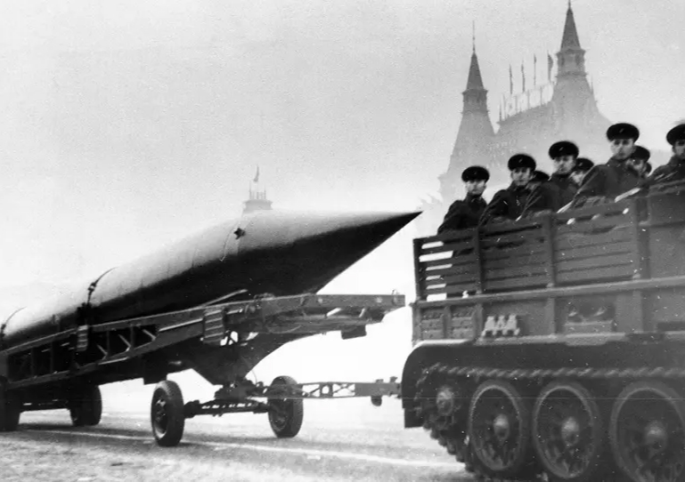
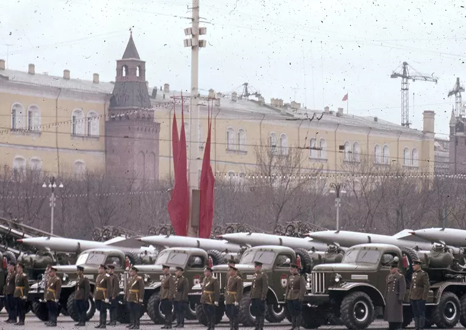
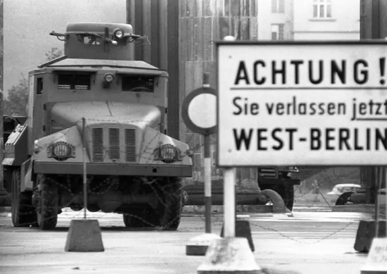
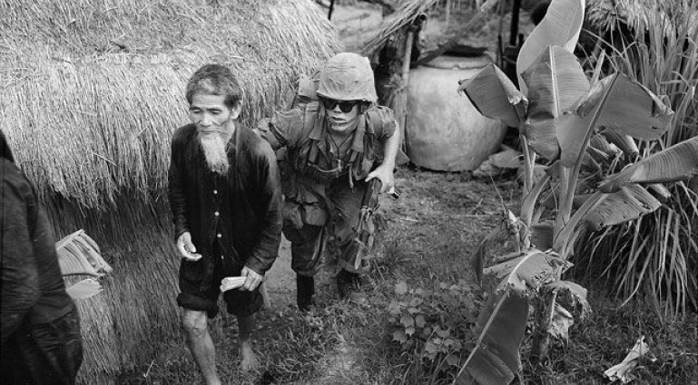
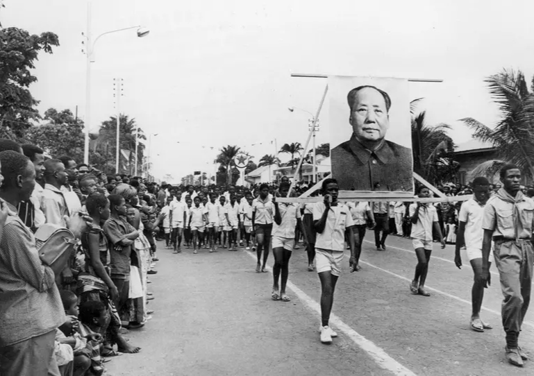
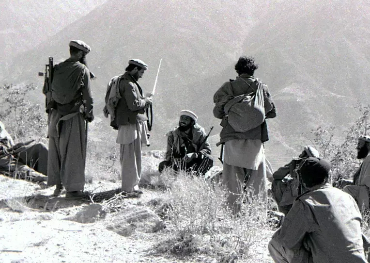
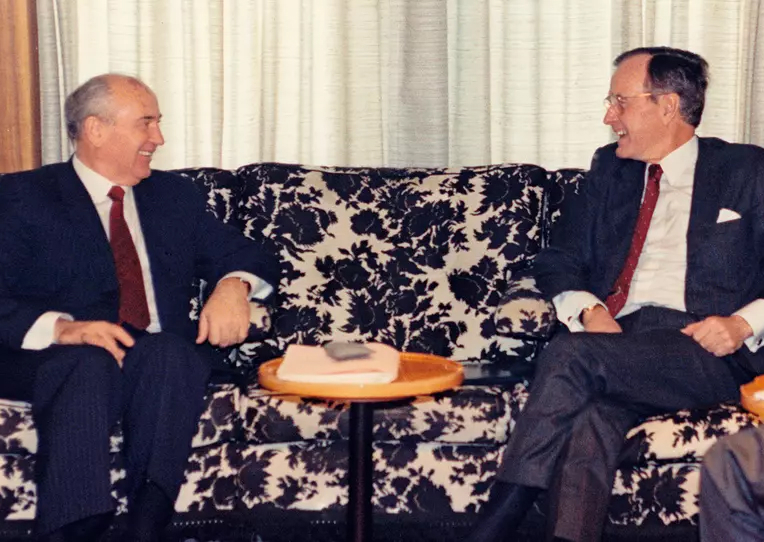

History of the Cold War
Sequence of events
The Cold War is a special type of interstate conflict with a tough ideological, economic and military-political confrontation between different socio-political systems. The term "cold war" is used primarily to denote the historical period in international relations in the second half of the 20th century between the military-political blocs led by the USSR and the USA. The beginning of the Cold War between the USSR and the USA is usually counted from 1946.
Simply put, this is a political-economic, military and ideological confrontation between two systems - socialist and capitalist, balancing on the brink of open conflict.
Or, as the famous British writer George Orwell would say here, it is "a world that is not a world." And if we take the Soviet-American conflict of the 20th century, it can be called the struggle between capitalism and socialism or, more broadly, a non-military confrontation between two systems or powers.
Prerequisites for the conflict
The Second World War significantly changed the balance of power in the world, which was no longer Eurocentric. Germany and Japan were defeated. The positions of England and France were significantly weakened.
Only one Western power emerged from the war stronger than it entered the conflict. The United States of America did not wage war on its own territory, and so its cities remained unharmed. Even the human losses were small compared to those of other countries. But the war led to a boom in the American military industry and made other countries of the world dependent on exports from the United States.
In 1945, the US share of Western industrial output was nearly two-thirds - about a third of world exports of goods. American banks concentrated more than half of the Western world's gold reserves.
The Soviet Union became the second post-war superpower. The USSR's enormous contribution to the victory over Nazi Germany evoked sympathy for it in the West and support for communists in various countries.
Thus, after the war, the Soviet Union gained dominant military-political and economic influence in Poland, Czechoslovakia, Romania, Hungary, Bulgaria, Yugoslavia and Albania. And with the liberation of China and North Korea from fascism and Japanese militarism by the Soviet army, the USSR had influence in these countries as well.
Causes of Global Tension
- Fear. The victorious superpowers, the USA and the USSR, after World War II were rightly afraid of each other's growing influence on other countries. Mutual fears soon turned into a struggle for spheres of influence and a furious rivalry for the status of the sole superpower.
- Resources. Economic growth requires the exchange of raw materials and final products of all forms of consumption. Therefore, both the USSR and the USA fought for markets for the turnover of their own and other people's resources. Having control over the territory of other countries, they could control other people's resources, including such important ones as oil, gas and minerals. Even if a superpower could not dispose of all the benefits of "partners", it kept them outside the influence of a competitor.
- Ideological conflict. The antagonism between capitalist America and the socialist Soviet Union made them temporary allies at best. The ideological contradictions between the two models of society - socialist and capitalist - were insurmountable.
Opponents in the Cold War
The victorious superpowers, both the Soviet Union and America, had enormous influence in the world. Ideological contradictions added fuel to the fire of fear of communist (for the USA) or imperialist (for the USSR) expansion.
On April 4, 1949, at the initiative of the United States and Canada, a military-political bloc was created in Washington, called the North Atlantic Treaty Organization (NATO). There were initially twelve countries that signed the agreement: Belgium, Great Britain, Denmark, Iceland, Italy, Canada, Luxembourg, the Netherlands, Norway, Portugal, the United States, and France. The stated goal of the bloc was "strengthening stability and increasing prosperity in the North Atlantic region."
In response to this, the Soviet Union created its own organization from the countries of the socialist camp. On May 14, 1955, in Warsaw, the Treaty of Friendship, Cooperation, and Mutual Assistance was signed between representatives of Albania, Bulgaria, Hungary, the GDR, Poland, Romania, the USSR, and Czechoslovakia. This military alliance was called the Warsaw Pact Organization (WP). The participating states pledged to provide assistance to each other in the event of an attack. Units of the Soviet army appeared on the territories of the bloc.
Thus, the greater part of the world was split into two opposing camps - capitalist and socialist. This circumstance determined the entire world politics for many decades. The established concept of "two camps" in the West contributed to the idea of the USSR as a source of threat. They saw in the Warsaw Pact countries a potential aggressor, ready to attack and conquer Western Europe. And although the socialist bloc, headed by the USSR, invariably advocated peaceful coexistence, for them the USA was the camp of imperialism, pursuing a policy of violence against peoples.
Expressions of opposition
The global conflict manifested itself in many ways. The superpowers promoted their way of life and worldview - capitalist or communist. And they sought to support the corresponding regime in other countries.
The actions of the superpowers will be clearer if we remember that the main goal in the Cold War is to have a long-term negative impact on the enemy. For example, in attempts to undermine another's economy and force the opponent to work to the point of exhaustion. Or to deprive the enemy government of popular support.
Thus, the Cold War spurred both blocs:
- constantly increase their military budgets;
- focus on developing defense tools;
- create increasingly sophisticated types of weapons;
- preserve ideological postulates.
In the pursuit of resources, both the US and the USSR wanted to expand their influence as far as possible. The struggle was on all fronts to win supporters, in the arms race and in the quest to achieve better economic indicators to demonstrate to the opponent the superiority of their system.
The main manifestations of the Cold War:
- open ideological confrontation;
- harsh propaganda and information warfare;
- creation of military-political blocs (NATO and Warsaw Pact);
- arms race;
- minimum economic and humanitarian contacts between blocs;
- construction of numerous military bases in allied countries;
- deliberate demonstration of force to strengthen one's authority and intimidate the enemy;
- constant readiness for open military conflict;
- police functions of one's armed forces;
- huge military spending.
The image of the enemy that emerged in each of the blocs played a key role in this confrontation. Historians note that it was important for the superpowers not only to establish themselves in the international arena, but also to find support for their foreign policy among their citizens. To form the necessary opinion, the media (the press, and then television), art (especially cinema), literature and school education were used. In this sense, the USSR and the USA were a "mirror" for each other.
Both superpowers, inspired by their victory in World War II, declared their claims to world domination. Their mutual phobias determined their foreign and domestic policies. At the same time, in the USSR, the military threat was a permanent state.
This fear was not unfounded. Klaus Naumann, Chairman of the NATO Military Committee in the mid-1990s, noted in a 1995 interview with the Polish socio-political magazine Wprost: "During the Cold War, NATO command posts were in constant readiness to conduct a massive offensive throughout Europe."
The Nuclear Deterrence Factor in the Cold War
The emergence of nuclear weapons determined many events in the second half of the 20th century. It also led to such a phenomenon as "nuclear deterrence." The founder of neoliberal international relations theory, Kenneth Waltz, noted that thanks to the atomic bomb, the balance of power between the superpowers was maintained mainly by their national armed forces, and not by their allies.
Main periods of the Cold War
The Cold War has a clearly defined chronological framework - from 1946 to 1991. But the first step towards confrontation was made in the summer of 1945 at the Potsdam Conference. This meeting was attended by the allies of the anti-Hitler coalition - the heads of state and government of the USA, England and the USSR. They gathered to discuss issues of a peaceful post-war structure for Europe.
At the same time as this conference, the first tests of the atomic bomb were taking place in America. As soon as he learned that they had been successful, US President Harry Truman ordered the immediate use of the new weapon against Japan.
The atomic bombing of the Japanese cities of Hiroshima and Nagasaki in early August 1946 was not simply a military operation to hasten Japan's surrender. Another goal was to demonstrate the capabilities of the bombs to the USSR, whose international prestige had greatly increased after the victory over Germany.
The Soviet Union regarded this demonstration as a threat to its national security. It made every effort to improve its weapons and undermine the US nuclear monopoly.
On August 29, 1949, at the test site near Semipalatinsk, the USSR conducted a test nuclear explosion and thus entered the atomic era. This first Soviet nuclear bomb was called RDS-1 — Stalin-1 jet engine.
The Beginning of the Cold War (1946–1953)
According to historians, the Cold War began with a policy speech by the leader of the victorious country in World War II. But whose speech it was — the leader of Great Britain or the Soviet Union — is where the researchers' opinions differ.
The first version. The formal beginning of the Cold War was the speech of the leader of the British Conservatives, Winston Churchill, on March 5, 1946, in Fulton (USA).
Shortly before this, Churchill lost the parliamentary elections in Great Britain and resigned. In Fulton, he accused the USSR of aggression and declared the need for Western countries to join an alliance to fight world communism:
In essence, here Churchill acted as the ideologist of the Cold War. The Fulton speech became the manifesto of this conflict.
The second version. In Western historiography, the main event indicating the beginning of the crisis in relations between the USSR and the USA is considered to be the speech of the General Secretary of the CPSU Central Committee Joseph Stalin on February 9, 1946. He delivered it at the Bolshoi Theater at a pre-election meeting of voters. Probably, Western researchers saw the prospect of a new armed conflict in the words:
There are other points of view that attribute the beginning of the "cold  Military parade on Red Square, Moscow, USSR. November 7, 1957. R-5M missile (NATO designation: SS-3 Shyster). Liquid-fueled guided surface-to-surface missile, first introduced in 1957.
Korean War 1950-1953
- The Korean War was a conflict between North Korea, supported by China and the Soviet Union, and South Korea, supported by the United States and other UN members.
- Causes of the war
- The war began on June 25, 1950, when North Korea invaded South Korea with the goal of unifying the Korean Peninsula under its rule. This was due to North Korea's desire to create a unified Korean state and spread communist ideology throughout the entire peninsula.
- Course of the War
- The war was fought on several fronts, including battles in Busan, Inchon, and Chosin. The United States and other UN members entered the war on the side of South Korea, providing it with military and economic aid.
- Results of the War
- The war ended with the signing of an armistice on July 27, 1953, establishing a demilitarized zone between North and South Korea. However, no formal peace treaty was signed, and the conflict between North and South Korea remains unresolved to this day.
- Consequences of the war
- The war had significant consequences for the region and the world, including:
- More than 2 million dead
- Significant damage to the Korean economy and infrastructure
- Strengthening of the US position in the region
- Increased tensions between the US and China, and between the US and the Soviet Union
- Formation of a military alliance between the US and South Korea
- Major participants in the war
- North Korea: supported by China and the Soviet Union
- South Korea: supported by the US and other UN members
- China: supported North Korea and provided it with military aid
- Soviet Union: supported North Korea and provided it with military aid
Arab–Israeli Wars from 1948 to 1982
- The Arab–Israeli War of 1948–49: The Israeli War of Independence, began after Israel declared independence on May 14, 1948. The war was fought between Israel and a coalition of Arab states, including Egypt, Jordan, Lebanon, Syria, and Iraq. Israel was able to repel the Arab attacks and maintain its independence.
- The Suez Crisis of 1956: Israel, France, and Britain jointly attacked Egypt to retake control of the Suez Canal, which had been nationalized by Egyptian President Gamal Abdel Nasser. The war ended with the withdrawal of troops and the restoration of the Suez Canal's status as an international zone.
- The Six-Day War of 1967: Israel launched a preemptive strike against Egypt, Syria, and Jordan, resulting in a quick Israeli victory and the capture of the Golan Heights, the West Bank, and the Gaza Strip. The war ended with a ceasefire, but no formal peace treaty was signed.
- The War of Attrition of 1967-1970: Egypt launched a campaign of attrition against Israel along the Suez Canal, including artillery bombardments and commando raids. The war ended with a ceasefire, but no formal peace treaty was signed.
- The Yom Kippur War of 1973: Egypt and Syria jointly attacked Israel on the Jewish holiday of Yom Kippur. The war ended with a ceasefire, but no formal peace treaty was signed.
- 1982 Lebanon War: Israel invaded Lebanon to expel the Palestine Liberation Organization (PLO) from the country. The war ended with the Israeli withdrawal from Lebanon, but the PLO was forced to leave Lebanon and move to Tunisia.
- These conflicts had significant consequences for the region, including:
- The displacement of Palestinian refugees
- Changing borders
- Ongoing tensions between Israel and its Arab neighbors
- Deteriorating relations between Israel and the Palestinians
- Increasing US influence in the region
- These conflicts also led to a number of important events, including:
- The signing of the Camp David Accords between Israel and Egypt in 1978
- The signing of the Israel-Jordan peace treaty in 1994
- Ongoing peace negotiations between Israel and Palestinians
Incomplete reduction of the conflict (1953–1962)
After Stalin's death in March 1953, some warming in relations between the blocs was outlined. Already in 1955, the head of the CPSU Central Committee Nikita Khrushchev took part in the Geneva Conference, the goal of which was to reduce international tensions. Soon after, speaking at the 20th Congress of the CPSU, Khrushchev declared the possibility of peaceful coexistence of the capitalist and socialist systems.
Despite the desire for détente, tensions between the countries did not subside. The arms race showed no signs of slowing down.
 On Red Square in Moscow in 1961Both the USA and the USSR continued to invent new means of destroying the enemy. America relied on strategic bombers, the Soviet Union on ballistic missiles. In 1957, the USSR launched its first nuclear submarine.
In 1956, with Khrushchev's new course of exposing Stalin's personality cult, unrest began in the socialist bloc, which the USSR had to suppress by force.
In 1961, the Second Berlin Crisis occurred, when the leadership of the GDR got tired of watching its population flee to the West through East Berlin.
The exodus from the GDR grew, and by 1961 it reached 2.5 million emigrants. To solve this problem, the GDR authorities built a concrete wall between West Berlin and Berlin, the capital of the GDR. This wall became one of the most striking symbols of the Cold War.
 August 13, 1961, near the Brandenburg Gate. The sign reads: "Attention! You are leaving West Berlin." In the background is a GDR water cannon.The summer and fall of 1962 were marked by the real threat of a third world war due to the Cuban Missile Crisis.
The crisis began when the Soviet Union decided to deploy nuclear weapons in Cuba. Missiles with nuclear warheads were transferred to Cuba as a response to the deployment of American missiles in Turkey, Great Britain, and Italy. In addition, in 1961, a socialist government came to power in Cuba, and this circumstance caused the threat of an American invasion of the island.
But in the next few days, this crisis was peacefully resolved. The USSR agreed to remove missiles from Cuba, and the US abandoned plans to invade the island and removed its missiles from Turkey and Italy.
The Vietnam War
On March 2, 1965, the US began regular bombing of North Vietnam — the air operation "Rolling Thunder". Read more about the Vietnam War of 1964-1975 in the RIA Novosti reference.
The Vietnam War of 1964-1975 became one of the most important events of the Cold War. Its course and results largely predetermined the further development of events throughout Southeast Asia.
The armed struggle in Indochina lasted more than 14 years, from the end of 1960 to April 30, 1975. Direct US military intervention in the Democratic Republic of Vietnam lasted for more than eight years. Military operations also took place in a number of areas of Laos and Cambodia.
After the end of the Vietnam War of 1945-1954, the national liberation struggle for reunification with the Democratic Republic of Vietnam (DRV) expanded in the south of the country. The government deployed significant forces created with US assistance to suppress the insurgency. Since the fall of 1959, guerrilla warfare has intensified; by the end of 1960, the rebels had liberated 1/3 of the territory of South Vietnam. In December 1960, the National Front for the Liberation of South Vietnam (NLF) was formed, in February 1961, the Liberation Army (AO SE) and local territorial troops were created, which successfully operated against the Armed Forces of the Republic of Vietnam and the American troops that had been supporting them since 1962. By mid-1964, they controlled 2/3 of the country's territory. In order to preserve the Saigon regime, the United States moved to direct military intervention.
 Vietnam Test SiteDétente (1962–1979)
Having narrowly avoided nuclear war during the Cuban Missile Crisis, the leaders of the United States and the Soviet Union tried to learn from mistakes that could have led to irreversible consequences. In 1963, a direct line of communication was established between the White House and the Kremlin.
That same year, the United States, the Soviet Union, and Great Britain signed a treaty banning nuclear weapons testing in the atmosphere and under water. In the late 1960s, the Soviet Union and the United States began bilateral negotiations on the limitation of strategic weapons, and in 1968 they signed the Treaty on the Non-Proliferation of Nuclear Weapons.
 That same year, the United States, the USSR, and Great Britain signed a treaty banning atmospheric and underwater nuclear weapons testing. In the late 1960s, the USSR and the United States began a process of bilateral negotiations on the limitation of strategic weapons, and in 1968 they signed a treaty on the non-proliferation of nuclear weapons.This process of easing international tensions culminated in 1975, when in Helsinki, the heads of 33 European states, the United States, and Canada signed an act recognizing the post-war political and territorial changes in Europe and confirming their readiness to resolve disputes peacefully.
Despite all these initiatives, the world has not become safer. The Cold War then echoed in the bloody Battle of Vietnam
Afghanistan Crisis (1979–1989)
A new stage of confrontation in the Cold War coincided with the Afghan War (1979–1989). The Soviet government sent troops to Afghanistan to support the pro-communist regime. Assessments of this war vary, but most historians, political scientists, and even Russian President Vladimir Putin noted that the USSR made irreparable political mistakes then.
 Mujahideen in Kunar, AfghanistanSoviet-American relations reached a very dangerous point in 1983, when US President Ronald Reagan declared the USSR an "evil empire." He did this to justify to the American public the escalation of the arms race, and adopted the Strategic Defense Initiative program. All efforts at détente went down the drain in an instant.
Both the US and the USSR deployed their latest missiles in Europe, pointing them at each other. The world again approached the brink of World War III. Tensions reached such a peak that even a failure in the warning system could lead to a "hot" war.
According to Wojciech Jaruzelski, Polish Prime Minister and President, by the mid-1980s, the economic and social consequences of the arms race had become increasingly obvious, especially in the USSR. It became clear that this could not continue.
In April 1985, General Secretary of the CPSU Central Committee Mikhail Gorbachev voiced the opinion that this spiral of arms needed to be slowed down. He came up with the concept of "new thinking" and proposed to put "socialist pluralism" and "the priority of universal human values over class values."
On Gorbachev's initiative, the first steps towards normalizing relations were taken in 1985. Since 1987, the ideological and military-political confrontation between the United States and the USSR initially lost its intensity, and in the next 2-3 years the confrontation almost came to naught.
The End of the Cold War (1989-1991)
During the decades of the Cold War, significant problems accumulated in the Soviet economy and finances. But the decisive factor in ending the Cold War was the change in the socio-political situation in the Soviet Union during the years of perestroika.
In the fall of 1989, a wave of coups d'état swept across Central and Eastern Europe. These events took place despite the fact that the Soviet Union and the Warsaw Pact still existed, and the Soviet army was on the territory of the allied countries. In just a few months, pro-Soviet communist regimes ceased to exist. Everywhere except Romania, these revolutions were peaceful, for which they were called "velvet".
This was the starting point for the end of more than 40 years of confrontation. The leaders of the United States, Western and Eastern Europe realized that the USSR would not defend socialism in the Eastern European countries "from external and internal enemies." First of all, because there was no reaction from the Soviet Union.
The perception of yesterday's enemies about each other also changed. In 1989, polls revealed one of the best indicators of positive assessments of the USSR/Russia among Americans - 62% against 29% of negative assessments. American foreign policy historian Michael Hogan noted in his book The End of the Cold War that "the destruction of the Berlin Wall in late 1989 marked the beginning of the destruction of an era of ideological and geopolitical struggle between the Soviet Union and the United States, Russia and the West."
In October 1990, Germany was reunified. Another important step toward ending the Cold War was taken on December 4, 1989. The leaders of Bulgaria, Hungary, East Germany, Poland, and the Soviet Union made a joint statement. They condemned the Soviet invasion of Czechoslovakia in 1968, calling those events "an unlawful act of interference in the internal affairs of a sovereign state."
 United States President George H. W. Bush (right) and General Secretary of the Communist Party of the Soviet Union (CPSU) Mikhail Gorbachev (left) meet aboard the ship "Maxim Gorky" in Malta during an international summit on December 2, 1989.An agreement in principle was reached to end the confrontation between the West and the East. In December 1989, at a meeting in Malta, the leaders of the United States and the Soviet Union declared the end of the Cold War. On July 1, 1991, the Warsaw Pact was dissolved, and December 25, 1991, was the last day of the Soviet Union. In his last address, Gorbachev summed up:
Results and consequences of the Cold War
The Cold War with its global confrontation destroyed the hopes of millions of countries for peaceful cooperation. According to historians, the military-political confrontation of the blocs was a gigantic mistake, costing the world enormous tension, enormous material and human losses.
At the same time, as experts believe, one of the key problems of both sides during the Cold War was the actual lack of strategy.
The Cold War as a global conflict was something new for both the Soviet and American elites. Nevertheless, under these conditions, the USSR was able to achieve significant success. Having obviously fewer resources and worse starting conditions, Moscow not only withstood the forty-five-year confrontation, but even sometimes went on the counteroffensive.
Today, historians point out that it was not the "velvet" revolutions in the countries of the socialist bloc that became the event that ended the Soviet-American confrontation. The Soviet government did not want to hold on to these states.
The end of the USSR was not initially associated with its defeat in the Cold War. According to the assessment of the Doctor of Historical Sciences Igor Uznarodov, this event can even be called the suicide of the government, because it was not directly connected with the struggle between the West and the East and was a consequence of the internal development of events and the struggle for leadership between different groups of the party elite.
For the USSR (and Russia)
The Cold War ended as a result of the efforts of both sides, but this would not have happened without the change of leadership in the USSR and Gorbachev's new policy. It is unknown how long the confrontation would have lasted and how it would have ended. Historians emphasize that Russia paid too high a price for the end of the Cold War, and the United States benefited from it as much as possible by creating a myth of victory over the USSR.
For Europe
The withdrawal of Soviet troops from the Warsaw Pact countries actually launched the collapse of the socialist bloc in Europe. The peoples of the former socialist camp could now build their lives according to the model of the democratic countries of the West. In fact, this circumstance returned Europe to the center of world politics. It ceased to be a "battlefield" of the two superpowers - at least for some time.
For the United States
In Western countries, there is an opinion that in the Cold War there was a winner - the United States and a loser - the collapsed Soviet Union. In America, there were even attempts to establish a commemorative sign - a medal "For Victory in the Cold War". This idea was especially popular in American society in the early 1990s. But in 2007, Hillary Clinton proposed awarding this medal to all those who served in the armed forces or worked in US government agencies from September 2, 1945 to December 26, 1991. These initiatives did not receive official status.
After the self-proclaimed victory in the Cold War, the Americans revised their containment strategy and means of military confrontation. Now America faced new threats in terms of national security, namely terrorism.
For Asia and Africa
In 1989, changes in Europe were bloodless only because the Soviet Union did not want to interfere in what was happening. In China that same year, everything was different: a student demonstration in Tiananmen Square in Beijing was suppressed by tanks. In the West and in dissident circles in China, these demonstrations were called "pro-democracy demonstrations", while official Beijing still talks about those events as an attempt at a "counter-revolutionary rebellion".
Although the Soviet model of socialism collapsed in the countries of the socialist camp in 1989, those events did not affect socialism as an ideology. In China, North Korea, Vietnam, Mongolia, Cuba and other countries, socialist regimes remained in power. The Cold War is still going on today in the confrontation between two Koreas: South and North.
With the start of the Cold War, Africa became one of the zones of tough confrontation between the superpowers. The Americans were primarily interested in the potential of mineral resources in African countries. After the collapse of the socialist bloc and the Soviet Union, US expansion on the African continent only intensified.